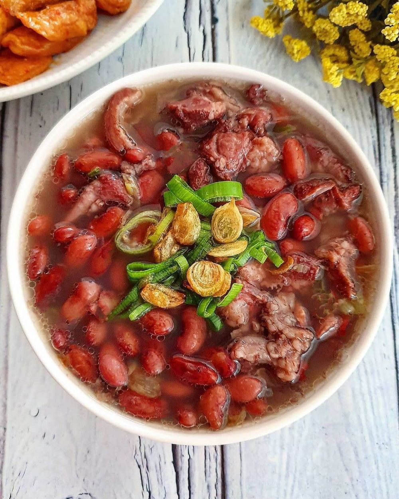

Sup Brenebon
Sup Brenebon adalah sup kacang merah khas Manado yang biasanya dimasak dengan daging babi atau sapi. Kuahnya gurih, sedikit berempah, dan sangat cocok dinikmati hangat.
Bahan-bahan:
- 250 gram kacang merah (rendam semalaman)
- 300 gram daging sapi (atau babi), potong-potong
- 1,5 liter air
- 2 lembar daun salam
- 2 batang daun bawang, iris
- 2 batang seledri, iris
- Garam secukupnya
- Gula secukupnya
- 5 siung bawang merah
- 3 siung bawang putih
- 1/2 sdt merica
- 1/2 sdt pala bubuk
Cara Membuat:
-
Rebus kacang merah
Rebus kacang merah hingga setengah empuk, lalu tiriskan. -
Rebus daging
Rebus daging hingga keluar kaldu, buang kotoran yang mengapung. -
Masukkan kacang merah
Masukkan kacang merah ke dalam rebusan daging. -
Masak hingga empuk
Tambahkan daun salam, lalu masak hingga kacang dan daging empuk. -
Tumis bumbu
Haluskan bawang merah, bawang putih, merica, dan pala, lalu tumis hingga harum. -
Campurkan ke dalam sup
Masukkan bumbu yang telah ditumis ke dalam panci. -
Bumbui
Tambahkan garam dan gula sesuai selera. -
Tambahkan sayuran
Masukkan daun bawang dan seledri. -
Sajikan
Sajikan hangat dengan nasi putih atau sambal dabu-dabu.